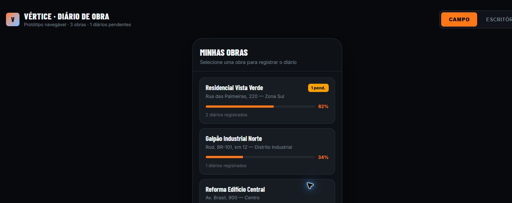
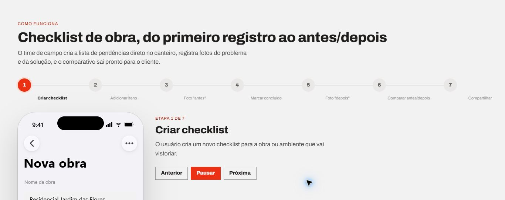
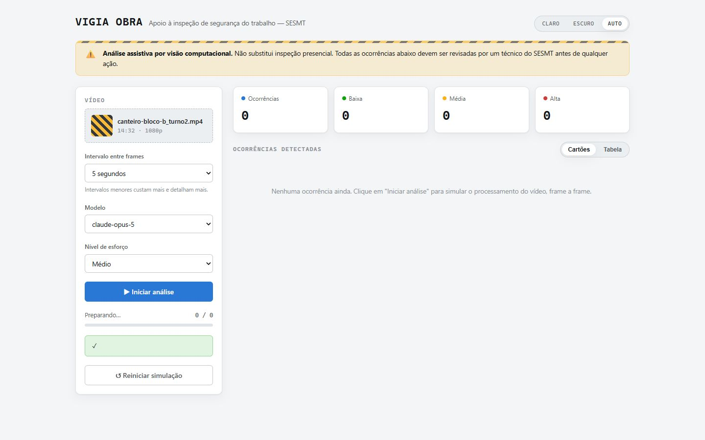
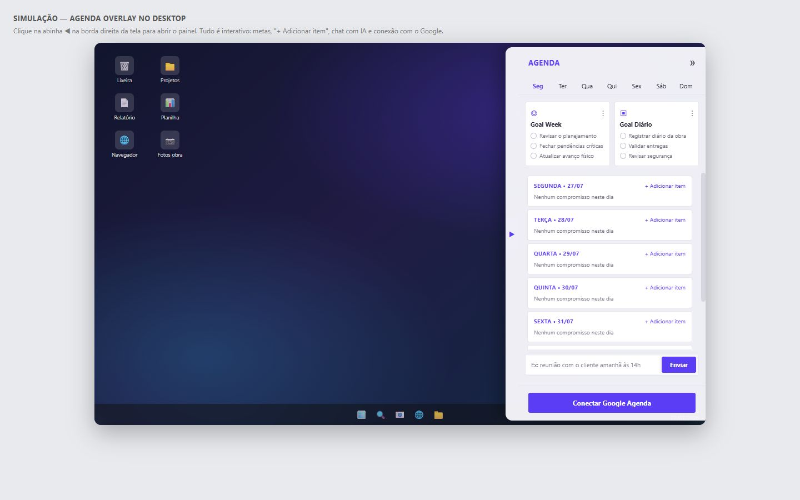
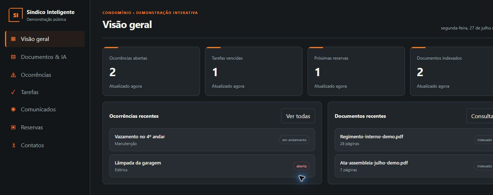

01 // a ideia ganhou forma
Construçãoencontrainteligência.
Uma experiência para mostrar como tecnologia deixa de ser promessa e passa a organizar atendimento, documentos, decisões e rotina de obra.
mago.init()animação original · 10s
// mago.visao
Não vendemos “tecnologia”.
Construímos um caminho mais simples.
Leonardo Manzo reúne experiência em construção, arquitetura de soluções e automação para transformar um problema real em uma primeira experiência navegável.
// mago.solucoes
O que pode ganhar
um pouco de magia.
Comece pelo gargalo que custa mais tempo, gera perda de informação ou atrasa a resposta ao cliente.
Sites e landing pages
Uma presença profissional para explicar o serviço, mostrar projetos e receber contatos mais completos.
Avaliar ideia ↗Automação com IA
Fluxos para organizar documentos, resumir informações e reduzir tarefas repetitivas com revisão humana.
Avaliar ideia ↗WhatsApp e atendimento
Triagem, briefing e respostas iniciais para não perder oportunidades no meio das conversas.
Avaliar ideia ↗Software e aplicativos
Ferramentas personalizadas para a rotina de campo, gestão, inspeção e acompanhamento.
Avaliar ideia ↗Consultoria e treinamento
Diagnóstico, priorização e capacitação prática para aplicar IA com critério e segurança.
Avaliar ideia ↗// mago.transformacao
Do improviso
para um fluxo visível.
- Pedidos espalhados
- Informação incompleta
- Retrabalho e demora
- Decisões sem registro
✦
- Entrada estruturada
- Prioridades claras
- Resumo centralizado
- Próximo passo definido
// mago.projetos
Ideias que já viraram
experiências navegáveis.
Cada projeto informa seu estágio real: protótipo, MVP local ou demonstração publicada.

Protótipo de interface01 / CAMPO
Diário de Obra
Registro diário organizado em um fluxo direto.
Ver demonstração ↗
Protótipo de interface02 / QUALIDADE
Checklist de Obra
Comparação visual antes e depois do reparo.
Ver demonstração ↗
Pipeline assistivo03 / SEGURANÇA
Vigia Obra
Apoio visual com revisão profissional obrigatória.
Ver interface ↗
MVP desktop local04 / PRODUTIVIDADE
Agenda Retrátil
Agenda e metas acessíveis na borda da tela.
Conhecer projeto ↗
MVP desktop local05 / OPERAÇÃO
Síndico Inteligente
Consulta documental acompanhada de fontes.
Conhecer projeto ↗// mago.processo
Assim a magia
acontece de verdade.
Sem pular direto para um sistema grande. Primeiro entendemos, depois mostramos, então construímos.
- 01ENTENDER
Briefing
Problema, pessoas, funções, integrações e limite de investimento.
- 02MOSTRAR
Protótipo
Uma página HTML bem construída para enxergar o fluxo antes de contratar tudo.
- 03CONSTRUIR
Implantação
Escopo essencial, prazo e preço definidos por etapas verificáveis.
- 04EVOLUIR
Manutenção
Acompanhamento e melhorias dentro de um limite combinado.
// proximo_passo
Conte o problema.
A primeira ideia aparece.
Quanto mais informações relevantes você trouxer, mais fiel será o diagnóstico. É assim que a magia acontece.
Começar meu briefing↗